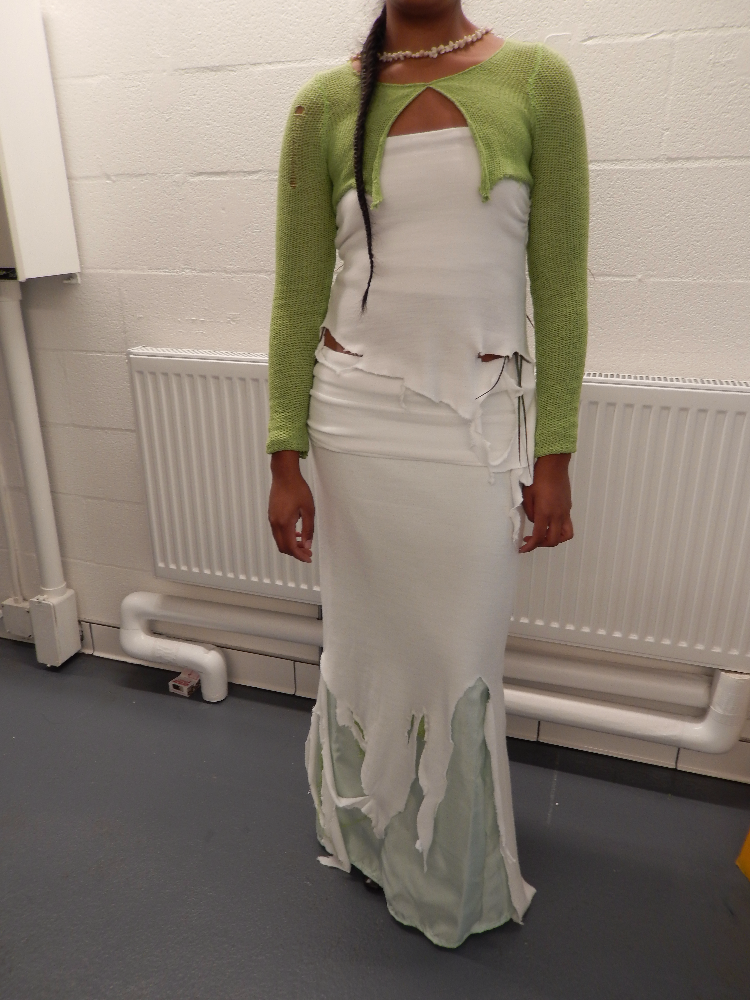

Model: Jeevin Kaur, Photographer: Siena Villancio-Wolter
I made this look for a runway show called Tidepool. I drew all of my inspiration from growing up in South Florida. When I think of water, I think of the rain and the ocean and the hurricanes and the everglades back home. It’s one of those beautiful places that forces you to notice nature because it refuses to be silent. I wanted to design a look that honored that. I knew I wanted to emulate the way that every building back home is drenched in yesterday’s thunderstorms and covered in algae and rotting wood and new growth is always pushing through cracks in the concrete and breaking through windows and swallowing abandoned boats. There's a violence there that is really special.

Model: Jeevin Kaur, Photographer: Siena Villancio-Wolter
I learned how to make garments in the process of designing for this show. I felt so sure that fashion design was something I needed to pursue that I had a sort of blind confidence that I would figure out everything else during the process. I am forever in gratitude to all the people who taught me how to sew and let me borrow their machines as I learned the art form I always knew I needed. At the end of the day community is everything, truly.